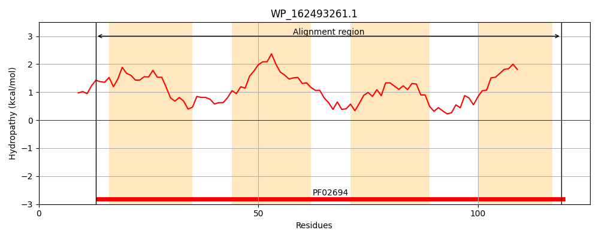
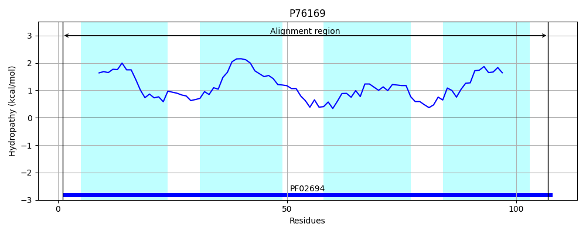
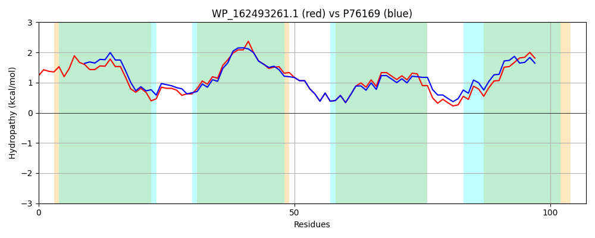

Hit Accession: P76169
Hit TCID: 2.A.7.26.1
Hit Description: gnl|BL_ORD_ID|11442 gnl|TC-DB|P76169|2.A.7.26.1 Hypothetical protein ynfA - Escherichia coli.
Mach Len: 107
e:0.000000
Query TMS Count : 4
Hit TMS Count: 4
TMS-Overlap Score: 3.600000
Predicted Substrates:None
BLAST Alignment:
| Protein Hydropathy Plots: | |
|---|---|
|  |  |
Pairwise Alignment-Hydropathy Plot: | |
|  | |